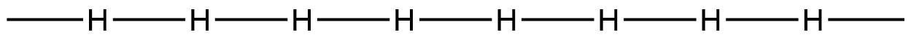
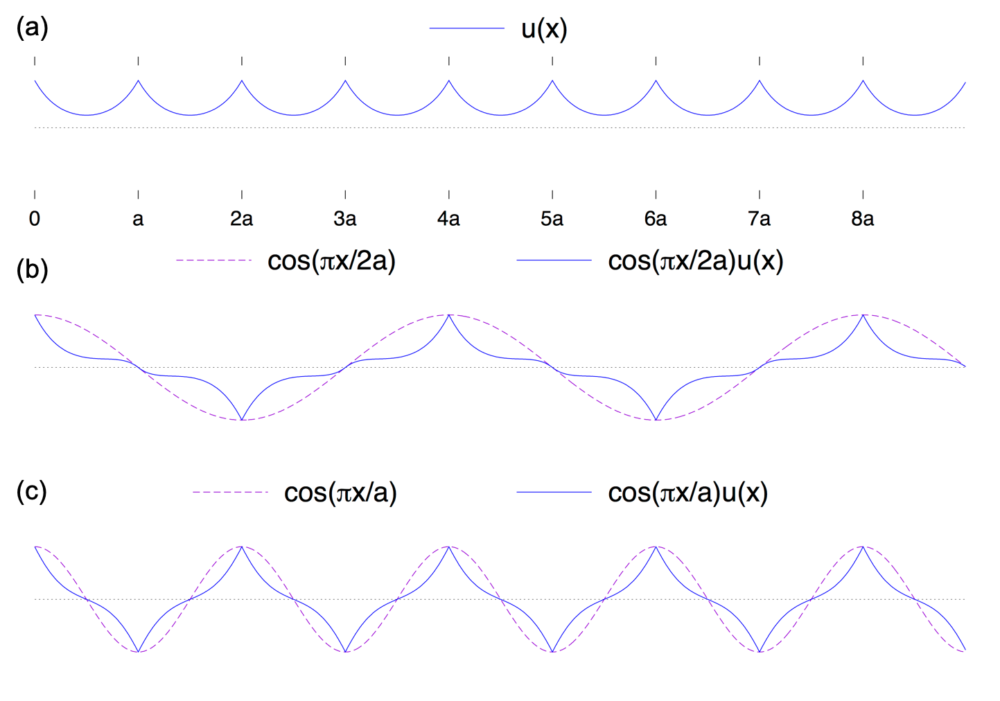
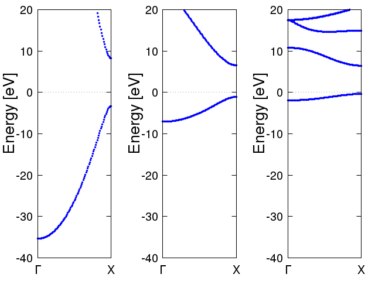
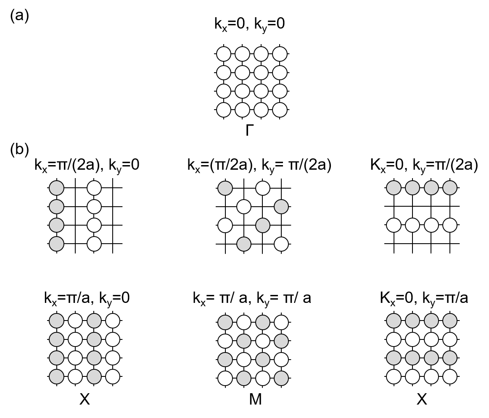
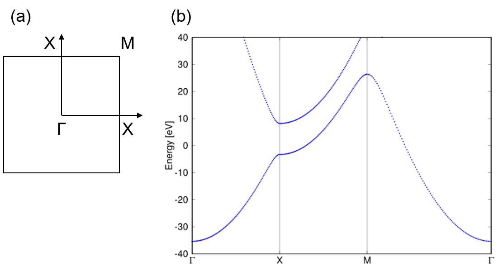

固体化学のノート：バンドと分子軌道
$$ \def\bra#1{\mathinner{\left\langle{#1}\right|}} \def\ket#1{\mathinner{\left|{#1}\right\rangle}} \def\braket#1#2{\mathinner{\left\langle{#1}\middle|#2\right\rangle}} $$
始めに
固体化学・固体物理を勉強すると、バンドという概念が出てきます。 化学分野でLCAO法に基づく分子軌道法のみを勉強していると、結晶に特有のこの概念がなかなかしっくりこなかった覚えがあります。そこで、このノートではLCAO法とバンドとの対応を考えてみます。
なお、ここでの議論は、参考文献1, 2と殆ど同様のものであることを述べておきます。 私自身、これらの本で初めにバンドの概念を勉強し、段階的に固体物理の教科書に入っていきました。
1次元の水素鎖モデルとブロッホ関数の導入
まず、次の図のように、等間隔 $a$ で１次元に水素原子が並んだモデルを考えます 。（当然ながらそんな系は実在せず、水素原子はペアになってH2となります。）

この系の波動関数は、ブロッホの定理により下記の形式で表されます。この導出に関してはここでは省略します。 $$ \psi_k(x) = \exp(ikx)u_k(x) $$
ここで、 $u_k(x)$ は格子間隔$a$の周期関数であり、$u_k(x) = u_k(x+a)$を満たします。また、$k$は、$ 0 \le k \le \frac{\pi}{a}$の範囲をとります（これも、ここでは天下り的に受け入れてください）。
$u_k$として、各原子核を中心とする1s軌道($\sum_n \chi_n(x-an)$)を考えると、波動関数は下記のように表すことができます。 $$ \psi_k(x) = \exp(ikx) \sum_n {\chi_n(x - an)} $$
kに依存した波動関数の形
ここで、上記の波動関数$\psi_k$に関して、$k$の値毎に、波動関数の形を考えてみます。
まず、$k = 0 $の場合、波動関数は、
$$
\psi_0(x) = \exp(i0x)\sum_n{\chi_n(x-an)} = \sum_n{\chi_n(x-an)}
$$
となり、それぞれの$\chi_i$が等価に線形結合したものとなります。
次に、$k = \frac{\pi}{a}$の場合の波動関数は、 $$ \psi(x) = \exp(i \frac{\pi}{a} x)\sum_n{\chi_n(x-an)} $$ ここで、各原子軌道の中心、即ち、$ x = am $となる座標を考えると、 $$ \psi(am) = \cos(m \pi)\sum_n{\chi_n(x - an)} = (-1)^m \sum_n{\chi_n(x - an)} $$ となり、x座標が$a$進むごとに、符号が逆転することがわかります。
$\exp(ikx)$に$k=\frac{\pi}{a}, \frac{\pi}{2a}$を代入して波動関数を展開し、それらの実部をプロットしたものが下記の図です。青の実線で示しているのが、$\exp(ikx)$の部分、ピンクの点線が波動関数全体$\psi_k$です。

ここまでは、$k=0, \frac{\pi}{a}, \frac{\pi}{2a}$の場合のみを考えましたが、このモデルでは水素原子が１次元に無限に並んでいるため、節が０で全ての原子軌道が同位相で結合する状態($k=0$)から、隣合う原子軌道が逆位相で結合する状態($k=\frac{\pi}{a}$)までkの値を段階的に変えて行くことができます。
kの値に対するエネルギーの変化： バンドの導入
ここまででみた$\psi_k(x)$の固有エネルギーは、下記のように表されます。
$$ E_k = \frac {\bra{\psi_k} H \ket{\psi_k} }{\braket{\psi_k}{\psi_k}} $$
化学結合の言葉を借りると、前節での$k=0$の場合は、結合性軌道でエネルギーが最も低くて安定な状態であるのに対し、$k=\frac{\pi}{a}$のでは反結合性軌道となり最もエネルギーの高い不安定な状態になります。 この様に、kの値を連続的に変えて行った際に、対応する軌道のエネルギーをプロットしたものが下図の様なものであり、これが「バンド図」もしくは「E-k分散図」と呼ばれるものです。

複数の原子軌道が相互作用する場合、軌道のエネルギーは軌道同士の重なりの大きさで分裂の程度が変わってきます。上の図では、水素原子間の距離を1Å(左), 2Å(中), 3Å(右)と変えて計算したものをプロットしており、間隔が広くなって軌道同士の相互作用が少なくなるとバンドの傾きが小さくなってくることがわかります。
2次元・3次元への拡張
ここまでは１次元で考えてみましたが、これを２次元に拡張します。と言っても、x軸・y軸は直交していますので、実際にはx,yそれぞれの軸に対応したkの値である$k_x, k_y$を変数分離して考えれば良いです。
前の節と同様に、$ 0 \le k_x,k_y \le \frac{\pi}{a} $でkの値を動かした時の1s軌道の様子を下図に示します。○の色が白いところは1s軌道が＋の符号、灰色のところは-の符号、何もない格子点は節になっているところと考えてください。

この図をみて分かるように、$ (k_x,k_y) = (\frac{\pi}a, 0) $と$ (k_x, k_y)=(0, \frac{\pi}a)$の場合では、対称性から同一の状態となります。 結晶の持つ対称性に対して定まるk点のうち、対称性の高いk点には名前がついており、それが上図で示した$\Gamma, X, M$といったものです。 二次元以上の場合は、通常は対称性の良いk点同士を結ぶ線上で、エネルギーをプロットしバンドを表示します。下図は、上記の二次元系のバンドをプロットしたものです。

実際の結晶の構造は３次元で決まりますが、以上と同様の考えで、結晶の持つ対称性に対してBroullianゾーンが決まり、その中で対称性の良いk点に関してバンドをプロットします。
s軌道以外の軌道
軌道の対称性はバンドの傾きを考える上で重要です。
s軌道、d軌道は、原子核に対して波動関数の符号が変わらない(g対称)のに対して、p軌道は原子核に関して符号が逆転(u対称)します。$k$の値に対して、波動関数のエネルギーは以下の様に変化します。
- g対称の軌道は、kの値が増加するにつれて、エネルギーが上がる（不安定になる）
- u対称の軌道は、kの値が装荷するにつれて、エネルギーが下がる（安定になる）
p軌道のπ結合では、kの値の増加につれてエネルギーは上がっていきます（g対称のσ結合と同じ）が、一般にσ結合よりもπ軌道は重なりが小さくなります。従って、バンドの傾きは緩やかになります。
参考文献
- 固体と表面の理論化学
- 固体の電子構造と化学
- Orbital Interaction